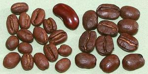
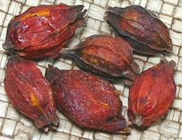
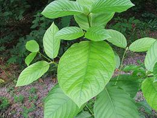
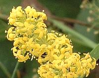
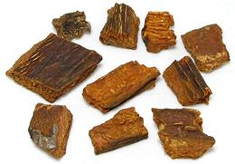
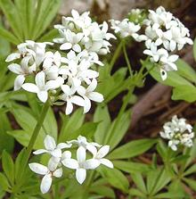

SAFARI
Users
Coffee
 [Coffea arabica, C. canephora (robusta), C. liberica]
Coffee, which is thought to have originated in Ethiopia, is the
economic blockbuster of the madder family. Its cultivation has resulted
in great fortunes, and in great sorrow. Today there is a Fair Trade
movement to see that beans are from sources that treat the laborers and
the local community fairly. Coffee now has its own
Coffee page.
Gardenia Fruits
 [Cape Jasmine; Chija (Korea); Zhi Zi (China); Gardenia jasminoides]
Gardenia fruits are used in Korea as a natural yellow food coloring, and
to dye cloth. A typical culinary use is to give pickled daicon radish
a bright yellow color. The orange-yellow color is from Crocetin, the same
substance that is responsible for the color of saffron. Gardenia fruit
also has a number of medicinal qualities, particularly repressing
inflamation and helping to control arthritis. The photo specimens were
purchased at a Korean market in Los Angeles in a 1/2 ounce bag at the
cost of 2015 US $3.98 per ounce, but lower prices can be found on the
Internet when buying in larger quantity. They are typically around
1-1/4 inches long, 5/8 inch diameter and weigh 16 to the ounce.
Kratom
 [Ketum; Mitragyna speciosa]
This Southeast Asian tree can grow to about 82 feet, but the photo shows a very young plant. It has a long history of medicinal use in it's native region. In North America, some people are using it for relief from chronic pain, opium withdrawal, and increasingly as a recreational drug.
Kratom has a wide range of side efects, which can become severe,
even deadly, when it is mixed with other substances. There have
been more than 16 deaths in the United States between 2014 and 2017,
though kratom has not been the only factor in any of them. There have
been some tests on animals, but there have been no clinical trials
in the United States to verify effectiveness and safety. Kratom is
illegal to various degrees in a number of countries and is illegal
in a number of US states. It is illegal in Canada for any ingested
use, but not for incense or similar applications.
Lady's Bedstraw
 [Yellow Bedstraw; Galium verum]
This low, scrambling perennial herb is native to temperate zones of
Europe, North Africa and Asia, from England to Japan. It is naturalized
in Canada, Tasmania, New Zealand and the northern half of the United
States. It's main use was for stuffing mattresses, because its scent was
effective against fleas. Culinarily, it was once used to coagulate milk
in making cheese, and to color Double Gloucester cheese, for which
annatto is now used. In Denmark it is still used to color and flavor the
alcoholic drink Bjæsk.
Photo by follavoine.net distributed under license Creative
Commons
Attribution-ShareAlike v3.0 Unported.
Quinine Bark
 [Fever Bark, Jesuit's Bark; Cinchona officinalis, C. pubescens, C. ledgeriana and others]
The powdered bark of Cinchona trees was found by Jesuit priests in South America to contain an effective treatment for malaria, quinine. Peru and surrounding countries tried to maintain a monopoly, but the English and Dutch had a great need for this medicinal in their tropical empires, so seeds and cuttings were smuggled out and planted in India, Ceylon (Sri Lanka) and Java.
The problem with Quinine was bitterness. To make the medicine more palatable, British officers in India mixed it with gin, water, lime juice and sugar - the original gin and tonic.
Today, quinine is still the bitter ingredient in tonic water, though
the allowed amount is well below a therapeutic dose. Most bars, however,
make a gin and tonic with plain soda water from a hose, unless you
demand it be made with bottled tonic water. For malaria, quinine has
been replaced with other drugs. The photo specimens were purchased from
a market serving a Latin American community in Los Angeles.
Sweet Woodruff
 [Sweetscented Bedstraw; Waldmeister (Germany); Galium odoratum]
This low, scrambling perennial herb is native to temperate zones of
Europe and Asia, from England to Japan, including parts of western
Siberia. It is sparsely naturalized in Canada and the northern half of
the United States. It's main culinary use is in Germany, to flavor May
wine, beer, brandy, punch, jellies, jams, ice cream, sherbet powder and
herbal teas. It is also used in Georgia, along with tarragon, to flavor
the soft drink Tarhun. Versions of this beverage are now also bottled in
Russia and Estonia, with some apparent plan to bottle or distribute a
version in the United States.
Photo by J.F. Gaffard distributed under license Creative
Commons
Attribution-ShareAlike v3.0 Unported.